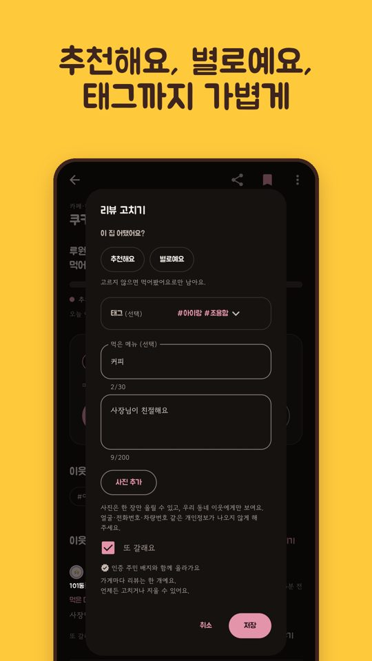

기
점심 투표로 보는 우리 아파트 입맛
기웃기웃 이야기 · 2026.11.09
"이번 주 점심은 국밥이냐 돈가스냐." 기웃기웃의 우리 아파트 투표는 이런 가벼운 질문에 같은 아파트 이웃들이 함께 답하는 기능이에요. 결과를 보면 우리 아파트 입맛이 조금씩 보여요.
누가 무엇을 골랐는지는 보이지 않아요
투표 결과는 선택지별 인원수와 비율로만 보여요. 어떤 이웃이 무엇을 골랐는지는 누구에게도 보이지 않아요. 투표하면 그때까지의 결과를 바로 볼 수 있고, 투표가 끝나면 최종 결과가 남아요.
우리 아파트끼리만
투표는 같은 아파트를 인증한 이웃끼리 해요. 그래서 "우리 아파트는 어떻게 생각할까?"가 그대로 결과가 돼요. 지난달 투표 결과는 월간 기웃에도 실려요.
투표에서 가게로
투표로 메뉴를 정했다면, 맛집 탭에서 그 메뉴를 파는 근처 가게 중 이웃이 먹어본 곳을 찾아보세요. 다녀와서 먹어봤어요를 누르면, 다음 이웃이 고를 때 도움이 돼요.

앱 화면 (스토어 소개 이미지)
투표 결과는 같은 아파트 이웃의 참여를 모은 참고용이에요.